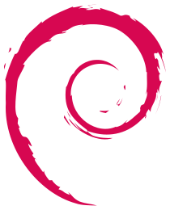
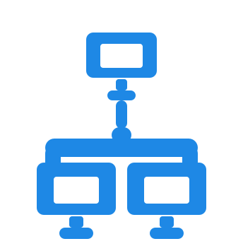
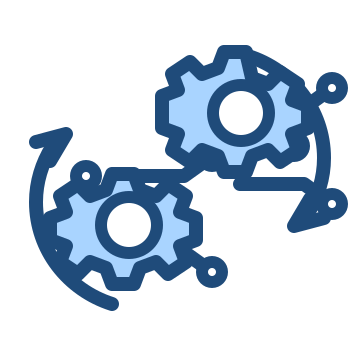
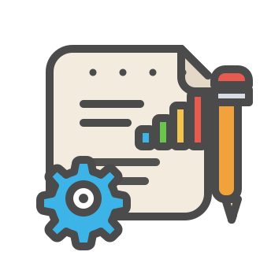

Gestão de Tecnologia
Organização de operações, melhoria de processos, governança e planejamento.
Sou
Thales Cambraia Dias atuo há mais de uma década com infraestrutura de TI. Nos últimos anos, tenho trabalhado como gestor de tecnologia, com experiência em redes, servidores físicos e em nuvem, virtualização, paravirtualização e gestão de projetos. Atualmente, sou estudante de Desenvolvimento de Sistemas Multiplataforma na FATEC.
Infra • Redes • Virtualização Projetos • Governança
Sou apaixonado por tecnologia e atuo na área há mais de uma década. Tenho experiência com servidores físicos, redes, ambientes em nuvem, virtualização/paravirtualização e gestão de tecnologia.
Estou sempre buscando evolução, hoje curso Desenvolvimento de Sistemas Multiplataforma (FATEC), unindo a vivência de infraestrutura com uma visão cada vez mais completa de software. Sou casado e pai de dois filhos, o que reforça meu foco em organização, consistência e resultado.
Organização de operações, melhoria de processos, governança e planejamento.
Estruturação de ambientes virtuais com foco em performance, segurança e alta disponibilidade.
Planejamento e execução de migrações com mínimo impacto e trilha de validação.
Cronograma, riscos, alinhamento com stakeholders e entrega com previsibilidade.
Desenvolvimento de um website para centralizar informações do Laboratório de Sensoriamento Remoto Agrícola do INPE, ampliando a visibilidade de pesquisas, projetos, membros e notícias.
Tecnologias: HTML, CSS, JavaScript, Node.js, PostgreSQL, Figma e Git.
Ver ProjetoProjeto desenvolvido para modernizar o atendimento da Secretaria Acadêmica por meio de um chatbot inteligente, permitindo que alunos obtenham informações acadêmicas de forma rápida, organizada e acessível.
Tecnologias: React, TypeScript, CSS, Node.js, PostgreSQL, Docker e API REST.
Ver Projeto
Debian / Linux
Redes VS Code
VS Code
 UniFi
UniFi
 Veeam
Veeam

Automação Zabbix
Zabbix
 Proxmox
Proxmox

Gestão de Projetos